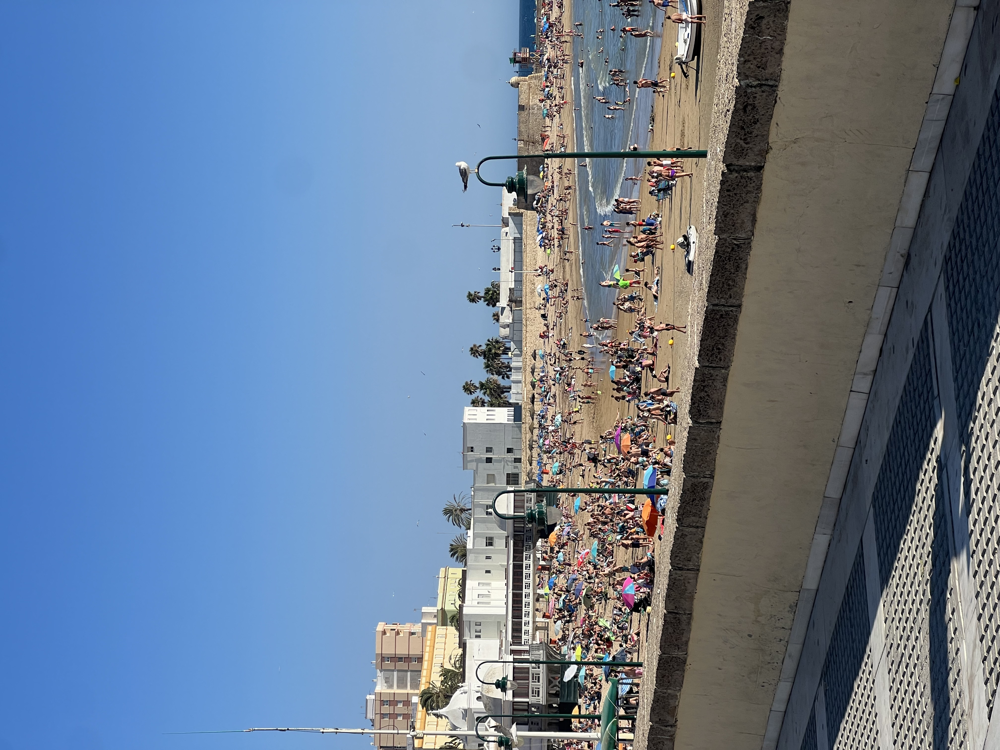

Delia Medrano
Why I studied abroad:
I studied abroad because I wanted to experience a new culture, become more independent, and connect what I was learning in school to real life. It gave me the chance to meet new people, push myself, and understand the world — and myself — in a deeper way.
It took place in Cádiz, Spain during the summer of my junior year of college, and it was my first time living outside the U.S. I was taking classes focused on language and culture, exploring different cities on weekends, and getting used to everyday things like public transportation, new foods, and speaking Spanish all the time. It was a big adjustment at first, but I ended up meeting great people, gaining confidence, and really connecting with the environment I was living in.
What did I learn:
My most important takeaway was realizing that I can be comfortable in new environments, even when theyre very different, while also learning to adapt, navigate daily life, and connect with the culture in Cádiz.
Some advice:
Be patient with yourself. Adjusting to a new environment takes time, and its normal to feel unsure or overwhelmed at first. Dont rush yourself to feel comfortable immediately—small steps, like learning your way around the city or figuring out daily routines, can make a big difference. Over time, what once felt strange will start to feel familiar!
Embrace the differences. Instead of comparing everything to home, try to see the new culture on its own terms. Explore local customs, try regional foods, and pay attention to how people interact. Being open to these differences not only helps you feel more connected but also makes your experience richer and more meaningful.
Practice the language as much as possible. Dont be afraid to make mistakes—speaking the local language is one of the fastest ways to improve and feel comfortable. Whether its ordering food, asking for directions, or chatting with classmates, each interaction builds confidence and helps you adapt to your surroundings.
Be open to new people and experiences. Some of the most memorable moments come from spontaneous trips, conversations with locals, or friendships with fellow students. Say yes to opportunities, even if they push you slightly out of your comfort zone, because these experiences often lead to personal growth and lasting memories.
Playa de la Caleta.
